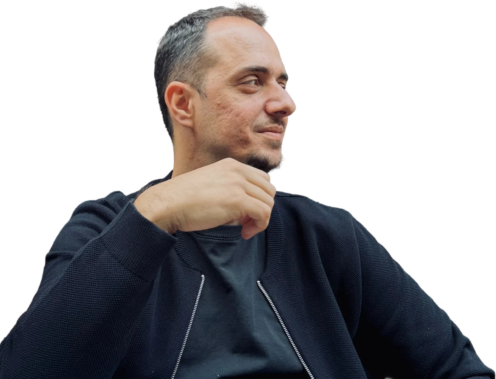

<!doctype html><html><head><meta charset="utf-8">
<link href="https://fonts.googleapis.com/css2?family=Geist:wght@400;500;600&display=swap" rel="stylesheet">
<style>
*{box-sizing:border-box;margin:0}
body{width:1200px;height:630px;overflow:hidden;font-family:Geist,system-ui,sans-serif;color:#111;background:radial-gradient(ellipse 80% 90% at 75% 60%,#f4f7fc 0,#e2eaf6 55%,#d8e2f1 100%)}
.wrap{position:relative;width:100%;height:100%;padding:64px 72px}
.who{display:flex;align-items:center;gap:14px;font:600 26px/1.1 Geist}
.who small{display:block;font:500 18px/1.2 Geist;color:#5b6170;margin-top:4px}
.who img{width:46px;height:40px;object-fit:contain}
h1{margin-top:58px;font:600 66px/1.02 Geist;letter-spacing:-.035em;max-width:640px}
.pill{position:absolute;left:72px;bottom:64px;display:inline-flex;align-items:center;gap:12px;padding:12px 22px;border-radius:99px;background:#fff;font:500 22px/1 Geist;box-shadow:0 1px 0 rgba(0,0,0,.04),0 10px 30px -12px rgba(30,50,90,.25)}
.pill i{width:12px;height:12px;border-radius:50%;background:#22c55e;box-shadow:0 0 0 5px rgba(34,197,94,.18)}
.right{position:absolute;right:0;bottom:0;width:520px;height:600px;display:flex;align-items:flex-end;justify-content:center}
.right.portrait img{height:600px;width:auto;-webkit-mask-image:linear-gradient(#000 75%,transparent)}
.right.shot{right:56px;bottom:auto;top:84px;width:470px;height:462px;border-radius:28px;overflow:hidden;box-shadow:0 30px 70px -25px rgba(20,30,60,.45)}
.right.shot img{width:100%;height:100%;object-fit:cover}
.co{margin-top:40px;font:600 24px/1 Geist;color:#5b6170}
.case h1{margin-top:24px;font-size:52px;max-width:560px}
</style></head><body><div class="wrap" id="w"></div>
<script>
const q=new URLSearchParams(location.search),k=q.get('k');
const W=document.getElementById('w');
const who='<div class="who"><div>Genc Berisha<small>Product Designer</small></div></div>';
if(k==='home'){W.innerHTML=who+'<h1>Product designer taking startups from idea to launch.</h1><div class="pill"><i></i>Open to remote product design roles</div><div class="right portrait"></div>'}
else{W.className+=' case';W.innerHTML=who+'<div class="co">'+q.get('co')+' · Case study</div><h1>'+q.get('t')+'</h1><div class="pill"><i></i>8 years · startups in 10 countries</div><div class="right shot"></div>'}
</script></body></html>
